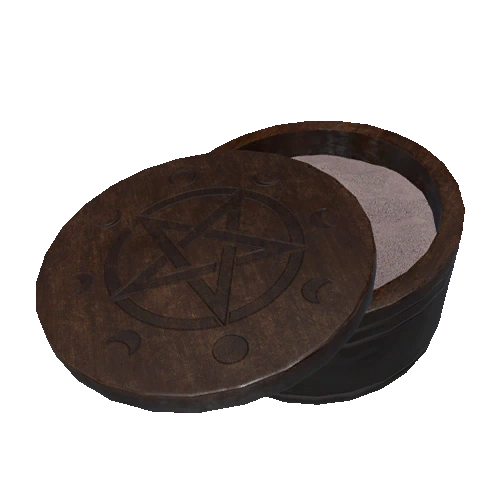
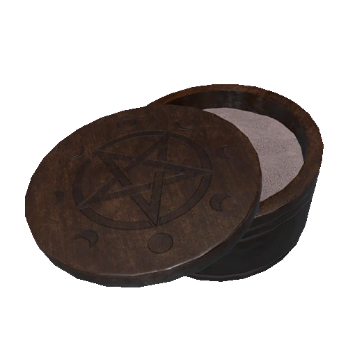

Spirit Box


La Spirit Box permette di comunicare con i fantasmi usando la voce. Funziona solo in presenza di determinati tipi di entità e in determinate condizioni di luce e distanza.
Lettore EMF


Il Lettore EMF è un pezzo acquistabile di attrezzatura usato per leggere la forza di campi elettromagnetici nell'ambiente vicino.
Termometro


La Spirit Box permette di comunicare con i fantasmi usando la voce. Funziona solo in presenza di determinati tipi di entità e in determinate condizioni di luce e distanza.
Luce UV


La Luce UV è utilizzata per rilevare l'Ultravioletto, quindi prove come impronte digitali e impronte.
Videocamera


La videocamera crea un feed video, che viene trasmesso al camion computer. Utilizzato per rilevare Orbi fantasma.
Torcia Elettrica


La torcia Elettrica fornisce una fonte di luce di base.
Crocifisso
Il crocifisso impedisce ai fantasmi di cacciare in un certo raggio.
Candela

La candela È una sorgente luminosa dispiegabile che può essere accesa utilizzando una sorgente di fuoco come un accendino o un'altra candela.
Head Gear
L Head gear può essere equipaggiato sulla testa di un giocatore. Fornirà un feed video al computer. Può essere utilizzato per rilevare Orbi fantasma.
Incenso

L'incenso Utilizzato per impedire a un fantasma di cacciare per un breve periodo di tempo. può essere utilizzato anche durante una caccia per accecare temporaneamente il fantasma.'
Accendino

L'accensido è un oggetto utilizzato per illuminare incenso, alcali, cerchi evocatori, e fuochi da campo. Emette una piccola quantità di luce quando viene attivato e tenuto dal giocatore.
Sensore di Movimento
Il sensore di movimento si spegne quando un fantasma o un giocatore lo passa, facendo lampeggiare una piccola luce. Viene inoltre fornito un segnale al Camion.
Microfono Parabolico
Il microfono parabolico è utilizzato per ascoltare suoni paranormali in una vasta gamma.
Fotocamera

La fotocamera viene utilizzata per scattare foto di varie interazioni fantasma per un profitto aggiuntivo.
Sale
 

Il sale puo essere posizionato e i fastasmi possono interagirci lasciando delle tracce.
Medicine

Le medicine per la sanità servono al giocatore per abbassare il suo livello di sanità
Sensore di Suoni

Rileva suoni quasi non udibili in un'area e trasmette i dati al camion.
Treppiedi
Utilizzato come supporto per Videocamere. Abbassa la possibilità per il fantasma di lanciare una videocamera.
Puntatore D.O.T.S.


Il proiettore DOTS crea un campo di luci verdi quando viene posizionato. Utilizzato per rilevare Prove del proiettore DOTS.